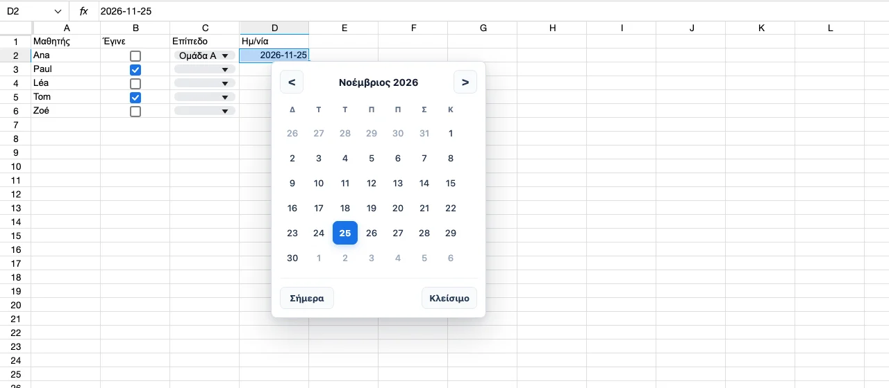

Πλαίσια ελέγχου, λίστες και ημερολόγιο

Πλαίσια ελέγχου
Επιλέξτε τα κελιά, Εισαγωγή › Πλαίσιο ελέγχου. Ένα κλικ σημειώνει ή ξεσημειώνει· το κελί έχει τιμή TRUE ή FALSE.
=IF(B2; "έγινε"; "απομένει")
=SUMPRODUCT(B2:B6; C2:C6)
=SUMPRODUCT(B2:B6; B2:B6)Ο δεύτερος τύπος προσθέτει τις τιμές της στήλης C με σημειωμένο πλαίσιο· ο τρίτος μετρά τα σημειωμένα πλαίσια.
Αναπτυσσόμενες λίστες
Επιλέξτε τα κελιά, Εισαγωγή › Αναπτυσσόμενη λίστα….
| Πηγή | Περιεχόμενο |
|---|---|
| Τιμές | οι επιλογές, μία ανά πεδίο· Προσθήκη επιλογής· χωρίς κόμμα |
| Από περιοχή | μια περιοχή με κελιά τις επιλογές: Φύλλο2!$A$1:$A$10 |
Μια περιοχή χωρίς $ μετατοπίζεται από κελί σε κελί, όπως ένας συμπληρωμένος τύπος. Αν αλλάξουν τα κελιά της, οι επιλογές ακολουθούν.
Το κελί δείχνει ένα βέλος· ένα κλικ ανοίγει τις επιλογές. Τιμή εκτός λίστας δεν γίνεται δεκτή.
Ημερολόγιο
Διπλό κλικ σε κελί ημερομηνίας ανοίγει ημερολόγιο: επιλέξτε ημέρα, αλλάξτε μήνα με < και >, Σήμερα για τη σημερινή. Ανοίγει σε κάθε κελί με μορφή ημερομηνίας, και κενό, εκτός αν περιέχει τύπο ή είναι κλειδωμένο.
Για στήλη ημερομηνιών που συμπληρώνεται με το ημερολόγιο: επιλέξτε την και δώστε της τη μορφή Ημερομηνία.
Αφαίρεση
Το Delete αφαιρεί το πλαίσιο ή τη λίστα από το κελί, μαζί με την τιμή.
Πλαίσια και λίστες αποθηκεύονται στο αρχείο Excel· τα πλαίσια είναι εκεί πλαίσια ελέγχου του Excel.